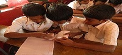
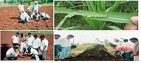
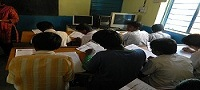
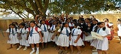

The Primary aim of ASER is-Education - Development - Empowerment.ASER Foundation finds innovative solutions to social issues in alignment with the business needs of companies and willingness of goodhearted individuals and institutions across the globe.We are working on projects like sponsoring children studies who cannot afford to go to school, inspiring children to attend school, providing them with different facilities that with aid them in completing their academic studies and make them self-reliant.
ASER Foundation adopted this novel concept of social venture capitalism to bring together business and social entrepreneurs to discover creative solution to complex social problem. This new platform would get people to think about their charitable giving, at the same time expanding horizons for funding sources to community wealth.
If we can dare to dream, we can also overcome hurdles.Failure occurs only when we stop trying. We understand that hurdles are part of any pursuit and we move on with a strong belief that they can be tackled. A relentless pursuit is the answer to most of the agony we face from failure.
It is easy to share a vision but it takes more than that to realize and implement it at a grass root level. Some of us might be fortunate enough to be blessed with a good life. It becomes more meaningful when we do noble activities and give back something to the society we live in. At ASER, we consider it our duty to help the less fortunate ones achieve the basic standards of life.
We have various events and projects running, which targets different sections of society.
ASER ventured into cooperates to help them gain employment. All the innovative events, activities and campaign designed for its children beneficiaries with a whole hearted purpose to provide maximum resources to the less privileged children to enhance their exposure to the modern world.
Project Pehla Kadam
Click here for more InformationThe objectives of the Project:
ASER's has launched English Program which started with children's primary education focusing on promoting the value of education and improving literacy in the country. Subsequently seeing that there were a large number of young adults who could not secure employment due to lack of soft skills, primarily the ability to speak and understand English, ASER ventured into cooperates to help them gain employment. All the innovative events, activities and campaign designed for its children beneficiaries with a whole hearted purpose to provide maximum resources to the less privileged children to enhance their exposure to the modern world
×ASER has collaborated with FARMER (Foundation for Agricultural Research and Management of Environmental Remedies), a renowned NGO working actively in Western UP for upliftment of farmers.
Project Green India Happy India
Click here for more InformationASER has collaborated with FARMER(Foundation for Agricultural Research and Management of Environmental Remedies) , a renowned NGO working actively in Western UP for upliftment of farmers. We are working with the aim for the welfare of villagers especially farmers, youths and women for the overall development of village. The vision is to create awareness among farmers about the proper utilization of government and non-government available resources with the farmers and villages, by management and coordination, environment protection, promotion of sustainable development of agriculture to improve standard of living in rural areas.
We are working on the project ”Digital Retailing Kiosks” will help maximize farmers' profit per unit area by providing 360 degree support to small farmers - crop selection, quality input procurement, farmers' training, post-harvest practices and marketing by forming clusters of farmers and achieving economy of scale.
We also introduce “Income Generation Projects” for needy & poor people. Education & health related camps are organized specially for tribal, Slum dwellers & poor as well needy peoples which will bring social, economic & financial stability to our society.
Project BADLAAV
Click here for more InformationWe also introduce “Income Generation Projects” for needy & poor people. Education & health related camps are organized specially for tribal, Slum dwellers & poor as well needy peoples which will bring social, economic & financial stability to our society
×Recently we introduced "STEP UP" is an initiative catering to children of construction workers who hold aspirations to read, learn and to explore what lies beyond those construction sites where they have spent most of their childhood.
Project STEP UP
Click here for more InformationRecently we introduced "STEP UP" is an initiative catering to children of construction workers who hold aspirations to read, learn and to explore what lies beyond those construction sites where they have spent most of their childhood. Project "STEP UP" works towards making these children self-dependent, by imparting primary non formal education to them and simultaneously honing their skills to make them lead a successful and confident life.
ASER's English Program started with children's primary education focusing on promoting the value of education and improving literacy in the country.
Subsequently seeing that there were a large number of young adults who could not secure employment due to lack of soft skills, primarily the ability to speak and understand English,
ASER ventured into cooperates to help them gain employment. All the innovative events, activities and campaign designed for its children beneficiaries with a whole hearted purpose to provide maximum resources to the less privileged children to enhance their exposure to the modern world.
Follow Us: